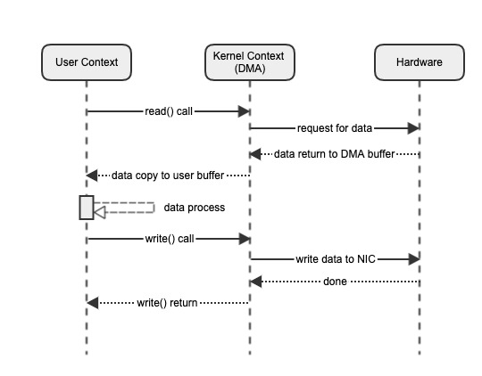
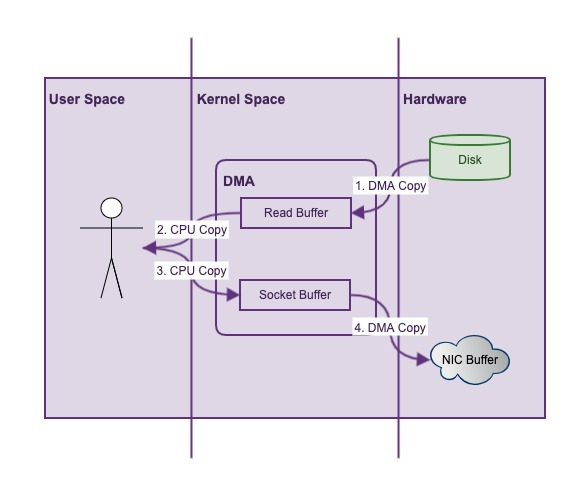
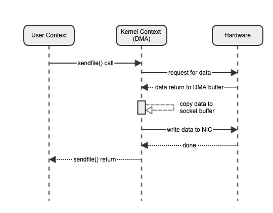
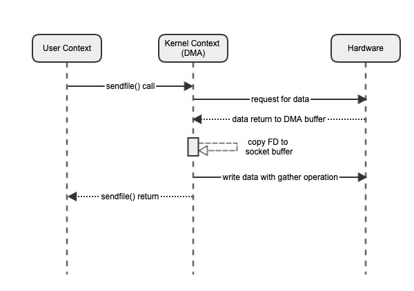
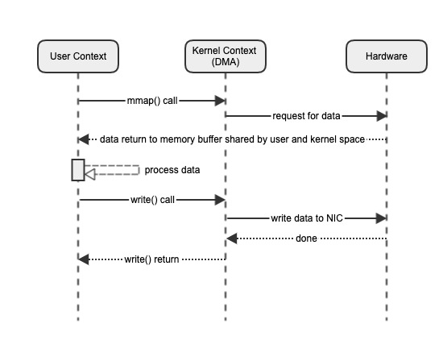
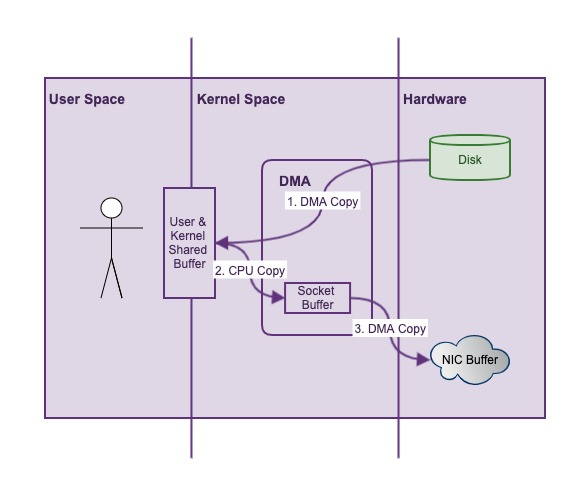
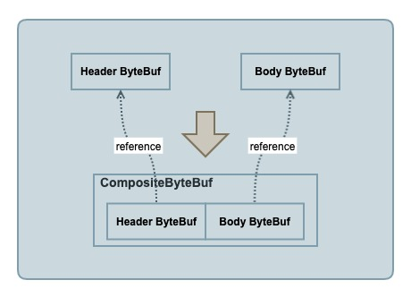

深入理解Linux, NIO和Netty中的零拷贝
零拷贝
Wikipedia上对零拷贝的解释如下：
“Zero-copy” describes computer operations in which the CPU does not perform the task of copying data from one memory area to another. This is frequently used to save CPU cycles and memory bandwidth when transmitting a file over a network.
“零复制”描述了计算机操作，其中CPU不执行将数据从一个存储区域复制到另一个存储区域的任务。 通过网络传输文件时，通常用于节省CPU周期和内存带宽。
零拷贝防止了数据在内存中的复制，可以提升网络传输的性能。由此产生两个疑问：
- 为什么会出现数据的复制？
- 零拷贝真的是0次数据复制吗？
Linux系统中的零拷贝
前篇文章Linux中的零拷贝技术已经讲过Linux的零拷贝。这里复习下。
- 内核空间：计算机内存被分为用户空间和内核空间。内核空间运行OS内核代码，并可以访问所有内存，机器指令和硬件资源，具有最高的权限。内核空间是属于操作系统的。不是cpu的硬件。
- 用户空间：即内核以外的所有空间，用于正常用户进程运行。用户空间的进程无权访问内核空间，只能通过内核暴露的接口----系统调用(system calls)去访问内核的一小部分。如果用户进程请求执行系统调用，需要给内核发送系统中断(software interrupt)，内核会分派相应的中断处理器处理请求。
- DMA：Direct Memory Access(DMA)是来应对CPU与硬盘之间速度量级不匹配的问题的，它允许某些硬件子系统访问独立于CPU的主内存。如果没有DMA，CPU进行IO操作的整个过程都是阻塞的，无法执行其他工作，这会使计算机陷入假死状态。 如果有DMA介入，IO过程变成这样：CPU启动DMA传输，期间它可以执行其他操作；DMA控制器(DMAC)在传输完成后，会给CPU发送中断信号，这时CPU便可以处理传输好的数据。
传统的网络传输
网络IO的一个常见场景是，将文件从硬盘读取出来，并通过网卡发送至网络。以下是简单的伪代码：
// 从硬盘读取数据
File.read(fileDesc, buf, len);
// 发送数据到网络
Socket.write(socket, buf, len);
代码层面，这是一个非常简单的操作，但是深入到系统层面，我们来看看背后发生了什么：

由于用户空间无法直接访问文件系统，所以，这个场景涉及到了三个模块的交互：用户空间，内核空间和硬件。
- 用户发起read()系统调用(syscall)，请求硬盘数据。此时，会发生一次上下文切换(context switch)。
- DMA从硬盘读取文件，这时，产生一次复制：硬盘–>DMA缓冲区。
- DMA将数据复制到用户空间，read()调用返回。此时，发生一次上下文切换以及一次数据复制：DMA缓冲区–>用户空间。
- 用户发起write()系统调用，请求发送数据。此时发生一次上下文切换和一次数据复制：用户空间–>DMA缓冲区。
- DMA将数据复制到网卡，以备网络发送。此时发生第四次数据复制：DMA缓冲区–>套接字缓冲区
- write()调用返回，再次发生上下文切换。
数据流如下：

可以发现，其中共涉及到了4次上下文切换以及4次数据复制。对于单纯的网络文件发送，有很多不必要的开销。
sendfile传输
对于上述场景，我们发现从DMA缓冲到用户空间，和从用户空间到套接字缓冲的两次CPU复制是完全没必要的，零拷贝由此而生。针对这种情况，Linux内核提供了sendfile系统调用。 如果用sendfile()执行上述请求，系统流程可以简化如下：

sendfile()系统调用，可以实现数据在DMA内部的复制，而不需要将数据copy到用户空间。由此，上下文切换次数减为2次，数据复制次数减为3次。这已经实现了用户空间的零拷贝。
这里有一个问题：为什么DMA内部会出现一次复制(此次复制需要CPU参与)？这是因为，早期的网卡，要求被发送的数据在物理空间上是连续的，所以，需要有Socket Buffer。 但是如果网卡本身支持收集操作(scatter-gather)，即可以从不连续的内存地址聚集并发送数据，那么还可以进一步优化。
网卡支持scatter-gather的sendfile传输
在Linux内核版本2.4之后对此做了优化，如果计算机网卡支持收集操作，sendfile()操作可以省去到Socket Buffer的数据复制，取而代之的是，直接将数据位置和长度的描述符(descriptors)，传递给Socket Buffer：

借由网卡的支持，上下文切换的次数为2次，数据复制的次数也降低为2次。而这两次的数据复制是必须的，也就是说，数据在内存中的复制已经完全避免。 对于从硬盘向网络发送文件的场景，如果网卡支持收集操作，那么sendfile()系统调用，真正意义上的做到了零拷贝
内存映射(mmap)
对于“网络发送文件”的情况，用sendfile()系统调用可以极大地提高性能(据测试吞吐量可达传统方式的三倍)。但有一点不足的是，它只支持“读取->发送”这一“连贯操作”，所以，sendfile()一般用于处理一些静态网络资源，如果要对数据进行额外的操作，它无能为力。
内存映射(Memory mapping–mmap)对此提供了解决方案。mmap是一种内存映射文件的方法，它可以将一个文件映射到进程的地址空间，实现文件磁盘地址和进程虚拟地址空间中的虚拟地址的对应。如此一来，用户进程可以采用指针读写操作这一段内存，而内核空间对这段区域的修改也直接反映到用户空间。简而言之，mmap实现了用户空间和内核空间数据的共享。可以猜到，如果使用mmap系统调用，上文中所述场景的步骤如下：

用户发起mmap()系统调用，DMA直接将数据复制到用户空间和内核空间的共享虚拟内存，之后，用户便可以正常操作数据。期间进行了2次上下文切换，1次数据复制。接下来往网卡发送数据的流程，与前面一样采用write()系统调用。
数据流如下：

可以看到，相比于传统的方式，mmap省去了一次数据的复制，广义上也可以称之为零拷贝。与此同时，它还使得用户可以自定义地操作数据，这是相较于sendfile的优势所在。
不过，如果数据量很小(比如KB级别)，使用mmap的效率反而不如单纯的read系统调用高。这是因为mmap虽然避免了多余的复制，但是增加了OS维护此共享内存的成本。
NIO中的零拷贝
从1.4版本开始，JDK引入了NIO，提供了对零拷贝的支持。由于JVM是运行在OS之上的，其功能只是对系统底层api的封装，如果OS本身不支持零拷贝(mmap/sendfile)，那JVM对此也无能为力。 JDK对零拷贝的封装，主要体现在FileChannel这个类上。
map()的签名如下：
public abstract class FileChannel
extends AbstractInterruptibleChannel
implements SeekableByteChannel, GatheringByteChannel, ScatteringByteChannel {
public abstract MappedByteBuffer map(MapMode mode, long position, long size) throws IOException;
}
以下引自方法注释：
Maps a region of this channel’s file directly into memory…For most operating systems, mapping a file into memory is more expensive than reading or writing a few tens of kilobytes of data via the usual read and write methods. From the standpoint of performance it is generally only worth mapping relatively large files into memory.
将此通道的文件区域直接映射到内存中...对于大多数操作系统，将文件映射到内存中比通过常规读写方法读取或写入几十KB数据要昂贵得多。 从性能的角度来看，通常仅需要将较大的文件映射到内存中。
map()方法可以直接将一个文件映射到内存中。来简单看看FileChannelImpl中方法的具体实现：
public class FileChannelImpl extends FileChannel {
public MappedByteBuffer map(MapMode mode, long position, long size) throws IOException {
...
synchronized (positionLock) {
...
try {
// 实际调用的是调用map0方法
addr = map0(imode, mapPosition, mapSize);
} catch (OutOfMemoryError x) {
// An OutOfMemoryError may indicate that we've exhausted
// memory so force gc and re-attempt map
System.gc();
...
}
}
...
}
// Creates a new mapping
private native long map0(int prot, long position, long length) throws IOException;
}
最终调用的是一个native的map0()方法。solaris版的方法的源码在FileChannelImpl.c中：
JNIEXPORT jlong JNICALL
Java_sun_nio_ch_FileChannelImpl_map0(JNIEnv *env, jobject this,
jint prot, jlong off, jlong len)
{
...
// 发现，内部果然是通过mmap系统调用来实现的
mapAddress = mmap64(
0, /* Let OS decide location */
len, /* Number of bytes to map */
protections, /* File permissions */
flags, /* Changes are shared */
fd, /* File descriptor of mapped file */
off); /* Offset into file */
if (mapAddress == MAP_FAILED) {
if (errno == ENOMEM) {
JNU_ThrowOutOfMemoryError(env, "Map failed");
return IOS_THROWN;
}
return handle(env, -1, "Map failed");
}
return ((jlong) (unsigned long) mapAddress);
}
最终map()方法会返回一个MappedByteBuffer，熟悉NIO的同学估计对这个类不会陌生，大名鼎鼎的DirectByteBuffer便是它的子类。它引用了一块独立于JVM之外的内存，不受GC机制所管制，需要自己来管理创建与销毁的操作。
transferTo()方法
mmap系统调用有了Java版的马甲，那sendfile呢？来看看FileChannel的transferTo()方法，签名如下：
public abstract class FileChannel
extends AbstractInterruptibleChannel
implements SeekableByteChannel, GatheringByteChannel, ScatteringByteChannel {
public abstract long transferTo(long position, long count, WritableByteChannel target) throws IOException;
}
以下引自方法注释：
Transfers bytes from this channel’s file to the given writable byte channel… This method is potentially much more efficient than a simple loop that reads from this channel and writes to the target channel. Many operating systems can transfer bytes directly from the filesystem cache to the target channel without actually copying them.
后半句其实隐式地说明了，如果操作系统支持“transfer without copying”，transferTo()方法就能做到相应的支持。来看看FileChannelImpl中方法的实现：
public long transferTo(long position, long count, WritableByteChannel target) throws IOException {
...
// Attempt a direct transfer, if the kernel supports it
// 如果内核支持，采用直接传送的方式
if ((n = transferToDirectly(position, icount, target)) >= 0)
return n;
// Attempt a mapped transfer, but only to trusted channel types
// 尝试使用mmap传送方式
// 其实这里也用到了mmap，由于上面已经简要介绍过，故不再展开
if ((n = transferToTrustedChannel(position, icount, target)) >= 0)
return n;
// Slow path for untrusted targets
// 传统的传送方式
return transferToArbitraryChannel(position, icount, target);
}
由注释可以看出来，sendfile()调用应该就发生在transferToDirectly()方法中，我们进去看看：
private long transferToDirectly(long position, int icount, WritableByteChannel target) throws IOException {
if (!transferSupported)
return IOStatus.UNSUPPORTED;
// 一系列检查判断
...
if (nd.transferToDirectlyNeedsPositionLock()) {
synchronized (positionLock) {
long pos = position();
try {
// 调用的是transferToDirectlyInternal()方法
return transferToDirectlyInternal(position, icount, target, targetFD);
} finally {
position(pos);
}
}
} else {
// 调用的是transferToDirectlyInternal()方法
return transferToDirectlyInternal(position, icount, target, targetFD);
}
}
private long transferToDirectlyInternal(long position, int icount, WritableByteChannel target, FileDescriptor targetFD) throws IOException {
try {
begin();
ti = threads.add();
if (!isOpen())
return -1;
do {
// 转到native方法transferTo0()
n = transferTo0(fd, position, icount, targetFD);
} while ((n == IOStatus.INTERRUPTED) && isOpen());
...
return IOStatus.normalize(n);
} finally {
threads.remove(ti);
end (n > -1);
}
}
// Transfers from src to dst, or returns -2 if kernel can't do that
private native long transferTo0(FileDescriptor src, long position, long count, FileDescriptor dst);
可见，最终transferTo()方法还是需要委托给native的方法transferTo0()来完成调用，此方法的源码依然在FileChannelImpl.c中：
JNIEXPORT jlong JNICALL
Java_sun_nio_ch_FileChannelImpl_transferTo0(JNIEnv *env, jobject this,
jobject srcFDO,
jlong position, jlong count,
jobject dstFDO)
{
jint srcFD = fdval(env, srcFDO);
jint dstFD = fdval(env, dstFDO);
#if defined(__linux__)
off64_t offset = (off64_t)position;
// 果然，内部确实是sendfile()系统调用
jlong n = sendfile64(dstFD, srcFD, &offset, (size_t)count);
...
return n;
#elif defined (__solaris__)
sendfilevec64_t sfv;
size_t numBytes = 0;
jlong result;
sfv.sfv_fd = srcFD;
sfv.sfv_flag = 0;
sfv.sfv_off = (off64_t)position;
sfv.sfv_len = count;
// 果然，内部确实是sendfile()系统调用
result = sendfilev64(dstFD, &sfv, 1, &numBytes);
/* Solaris sendfilev() will return -1 even if some bytes have been
* transferred, so we check numBytes first.
*/
...
return result;
...
果不其然，最终方法还是通过sendfile()系统调用来达到传输的目的。注意，由于sendfile()只适用于往Socket Buffer发送数据，所以，通过零拷贝技术来提升性能，只能用于网络发送数据的场景。 什么意思呢？如果单纯的用transferTo()把数据从硬盘上的一个文件写入到另一个文件中，是没有性能提升效果的，
SendFile and transferTo in Java
我正在使用CentOs内核版本2.6.32。我计划使用NIO在有和没有transferTo（sendFile）的情况下进行测试。我的测试是将1GB文件从一个目录复制到另一个目录。但是，由于使用transferTo（），我没有发现任何显着的性能改进。请让我知道文件到文件sendFile是否确实在Linux内核中有效或仅文件到套接字有效吗？我需要为sendFile启用任何功能吗？
private static void doCopyNIO(String inFile, String outFile) {
FileInputStream fis = null;
FileOutputStream fos = null;
FileChannel cis = null;
FileChannel cos = null;
long len = 0, pos = 0;
try {
fis = new FileInputStream(inFile);
cis = fis.getChannel();
fos = new FileOutputStream(outFile);
cos = fos.getChannel();
len = cis.size();
/*while (pos < len) {
pos += cis.transferTo(pos, (1024 * 1024 * 10), cos); // 10M
}*/
cis.transferTo(0, len, cos);
fos.flush();
} catch (Exception e) {
e.printStackTrace();
}
}
sendfile（）syscall将文件发送到套接字。splice（）syscall可以用于文件
Most efficient way to copy a file in Linux
我在与OS无关的文件管理器中工作，并且正在寻找为Linux复制文件的最有效方法。Windows有一个内置函数CopyFileEx（），但是据我所知，Linux没有这种标准函数。所以我想我必须实现自己的。 明显的方法是fopen / fread / fwrite，但是有没有更好（更快）的方法呢？我还必须有能力每隔一段时间停止一次，以便可以更新文件进度菜单的“到目前为止”。
不幸的是，您不能sendfile()在这里使用，因为目的地不是套接字。（名称sendfile()来自send()+“文件”）。
对于零复制，可以splice()按照@Dave的建议使用。（除非它不是零拷贝；它将是从源文件的页面缓存到目标文件的页面缓存的“一个副本”。）
但是...（a）splice()是特定于Linux的；（b）只要正确使用便携式接口，几乎可以肯定也可以做到。
简而言之，将open()+ read()+write()与一个小的临时缓冲区一起使用。我建议8K。因此，您的代码将如下所示：
int in_fd = open("source", O_RDONLY);
assert(in_fd >= 0);
int out_fd = open("dest", O_WRONLY);
assert(out_fd >= 0);
char buf[8192];
while (1) {
ssize_t read_result = read(in_fd, &buf[0], sizeof(buf));
if (!read_result) break;
assert(read_result > 0);
ssize_t write_result = write(out_fd, &buf[0], read_result);
assert(write_result == read_result);
}
通过此循环，您将把8k从in_fd页面缓存复制到CPU L1缓存中，然后将其从L1缓存写入out_fd页面缓存中。然后，您将用文件中的下一个8K块覆盖L1缓存的该部分，依此类推。最终结果是，输入的数据buf根本不会真正存储在主存储器中（除非最后一次存储）。从系统RAM的角度来看，这与使用“ zero-copy”一样好splice()。另外，它非常适合任何POSIX系统。
请注意，此处的小缓冲区是关键。典型的现代CPU的L1数据缓存具有32K左右，因此，如果将缓冲区设置得太大，这种方法会比较慢。可能慢得多。因此，将缓冲区保持在“几千字节”范围内。
当然，除非您的磁盘子系统非常快，否则内存带宽可能不是您的限制因素。因此，我建议posix_fadvise让内核知道您要做什么：
posix_fadvise(in_fd, 0, 0, POSIX_FADV_SEQUENTIAL);
这将向Linux内核暗示其预读机制应该非常积极。
我还建议使用posix_fallocate来为目标文件预分配存储空间。这将提前告诉您是否会用完磁盘。对于具有现代文件系统（例如XFS）的现代内核，它将有助于减少目标文件中的碎片。
我最后建议的是mmap。由于TLB颠簸，它通常是最慢的方法。（非常新的具有“透明大页面”的内核可能会减轻这种情况；我最近没有尝试过。但是它过去肯定很糟糕。因此，mmap如果您有很多时间进行基准测试和使用新内核，那么我只会打扰测试。）
注释中存在一个问题，即splice从一个文件到另一个文件是否为零拷贝。Linux内核开发人员将此称为“页面窃取”。的手册页splice和内核源代码中的注释均表示该SPLICE_F_MOVE标志应提供此功能。
不幸的是，支持SPLICE_F_MOVE被猛拉在2.6.21（早在2007年），从来没有更换。（内核源代码中的注释从未更新。）如果您搜索内核源代码，您会发现SPLICE_F_MOVE实际上并没有在任何地方引用它。我可以找到的最后一条消息（来自2008年）说，它是“等待替换”。
底线是splice从一个文件到另一个调用memcpy以移动数据；它不是零拷贝。这并不比在使用小缓冲区read/的用户空间中做的更好write，所以您最好还是坚持使用标准的可移植接口。
如果曾经将“页面窃取”重新添加到Linux内核中，那么的好处splice将更大。（甚至在今天，当目的地是套接字时，您也会得到真正的零副本，从而splice更具吸引力。）但是，出于这个问题的目的，splice并不能为您带来多少好处。
Netty中的零拷贝
分析完了Linux内核和JVM层面的零拷贝，再来看看Netty中的零拷贝又是怎么回事。
类似的，由于Netty是构建在NIO之上的一个高性能网络IO框架，它也支持系统层面的零拷贝。举一个简单的例子，DefaultFileRegion类可以进行高效的网络文件传输，因为它封装了NIO中FileChannel的transferTo()方法：
public class DefaultFileRegion extends AbstractReferenceCounted implements FileRegion {
private FileChannel file;
public long transferTo(WritableByteChannel target, long position) throws IOException {
long count = this.count - position;
if (count < 0 || position < 0) {
throw new IllegalArgumentException(
"position out of range: " + position +
" (expected: 0 - " + (this.count - 1) + ')');
}
if (count == 0) {
return 0L;
}
if (refCnt() == 0) {
throw new IllegalReferenceCountException(0);
}
open();
// 方法内部调用的是FileChannel的transferTo方法，
// 可以得到系统层面零拷贝的支持
long written = file.transferTo(this.position + position, count, target);
if (written > 0) {
transferred += written;
}
return written;
}
}
那是不是Netty中所谓的零拷贝，完全依赖于系统支持呢？其实，零拷贝在Netty中还有另外一层意义：防止JVM中不必要的内存复制。
Netty in Action第5.1节是这么介绍ByteBuf API的：
Transparent zero-copy is achieved by a built-in composite buffer type.
通过内置的composite buffer实现了透明的零拷贝，什么意思呢？Netty将物理上的多个Buffer组合成了一个逻辑上完整的CompositeByteBuf，它一般用在需要合成多个Buffer的场景。这在网络编程中很常见，如一个完整的http请求常常会被分散到多个Buffer中。用CompositeByteBuf很容易将多个分散的Buffer组装到一起，而无需额外的复制：
ByteBuf header = Unpooled.buffer();// 模拟http请求头
ByteBuf body = Unpooled.buffer();// 模拟http请求主体
CompositeByteBuf httpBuf = Unpooled.compositeBuffer();
// 这一步，不需要进行header和body的额外复制，httpBuf只是持有了header和body的引用
// 接下来就可以正常操作完整httpBuf了
httpBuf.addComponents(header, body);

反观JDK的实现ByteBuffer是如何完成这一需求的：
ByteBuffer header = ByteBuffer.allocate(1024);// 模拟http请求头
ByteBuffer body = ByteBuffer.allocate(1024);// 模拟http请求主体
// 需要创建一个新的ByteBuffer来存放合并后的buffer信息，这涉及到复制操作
ByteBuffer httpBuffer = ByteBuffer.allocate(header.remaining() + body.remaining());
// 将header和body放入新创建的Buffer中
httpBuffer.put(header);
httpBuffer.put(body);
httpBuffer.flip();
相比于JDK，Netty的实现更合理，省去了不必要的内存复制，可以称得上是JVM层面的零拷贝。除此之外，整个ByteBuf的API都贯穿了零拷贝的设计理念： 尽量避免Buffer复制带来的开销。比如关于派生缓冲区(Derived buffers)的操作，duplicate()(复制)，slice()(切分)，order()(排序)等，虽然都会返回一个新的ByteBuf实例， 但它们只是具有自己独立的读索引、写索引和标记索引而已，内部存储(Buffer数据)是共享的，也就是过程中并没有复制操作。由此带来的一个负面影响是，使用这些操作的时候需要注意：修改原对象会影响派生对象， 修改派生对象也会影响原对象。
总结
- 由于Linux系统中内核空间和用户空间的区别，数据的读取和发送需要有内存中的复制。mmap系统调采用内存映射的方式，让内核空间和用户控件共享同一块内存，省去了从内核空间往用户空间复制的开销。sendfile系统调用可以将文件直接从硬盘经由DMA传输到套接字缓冲区，而无需经过用户空间。如果网卡支持收集操作(scatter-gather)，那么可以做到真正意义上的零拷贝。
- NIO中FileChannel的map()和transferTo()方法封装了底层的mmap和sendfile系统调用，从而在Java语言上提供了系统层面零拷贝的支持。
- Netty通过封装，也可以支持系统级别的零拷贝。此外，Netty中的零拷贝有另一层应用层面的含义：设计良好的ByteBuf API，防止了JVM内部不必要的Buffer复制。